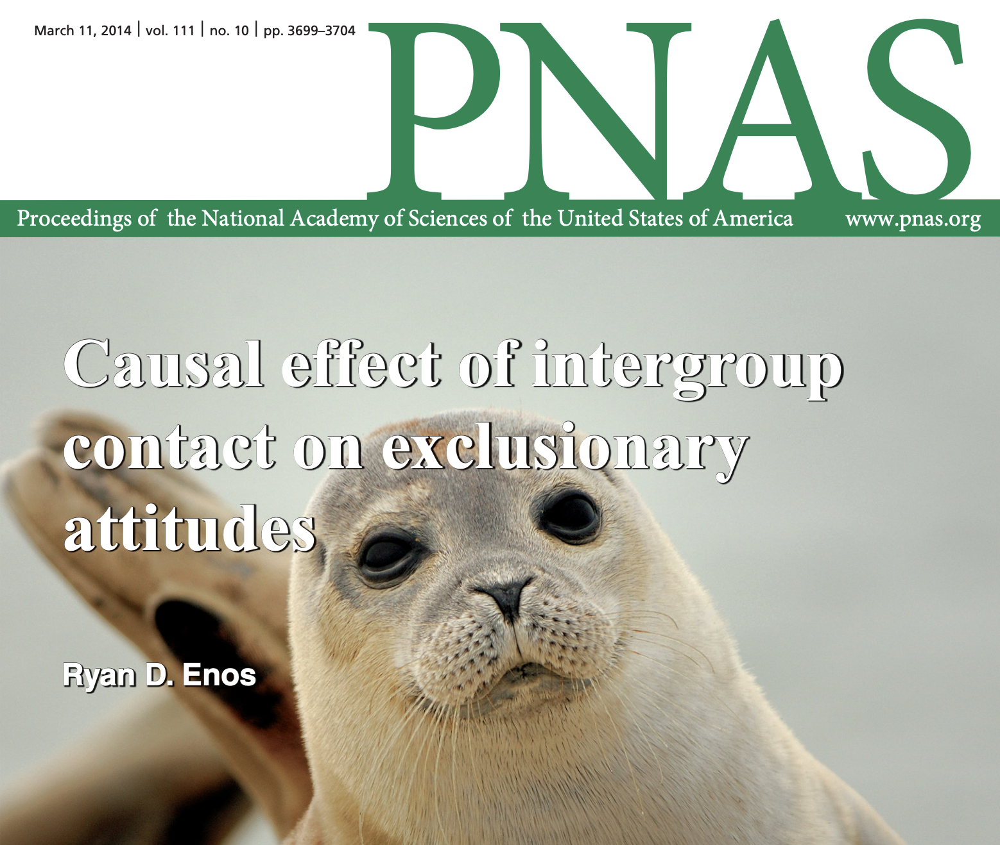

| Preceptor Table | |
|---|---|
| ID |
Outcome
|
| Height (cm) | |
| Student 1 | 190 |
| Student 2 | 160 |
| ... | ... |
| Student 47 | 172 |
| Student 48 | 176 |
| ... | ... |
| Student 325 | 180 |
| Student 326 | 162 |
| ... | ... |
| Student 670 | 185 |
3 Rubin Causal Model
Have you ever wondered what the world would be like without you?
In the classic film “It’s a Wonderful Life,” the protagonist, George Bailey, finds himself in a state of despair, convinced that his life has been meaningless. The movie takes the audience on a journey alongside George as he is granted a glimpse into an alternate reality—a world in which he had never existed. Through this experience, it becomes evident that George’s life had a significant and positive impact on the lives of countless individuals within his community. His selfless actions and kind-hearted nature had touched the lives of many, leaving an indelible mark that he had never fully appreciated. The film serves as a poignant reminder that our lives, no matter how seemingly ordinary, have the power to make a profound difference in the world around us.
By showing what the world would have been like without George, we get an idea of the causal effect of his life on his town and the people who live there. This chapter explains causation using the framework of potential outcomes and the Rubin Causal Model (RCM).
We begin by discussing predictive versus causal models in data science. In both cases, a Preceptor Table and a Population Table provide analytic tools for attacking the problem. Assumptions concerning validity, stability, representativeness, and unconfoundedness are critical.
3.1 Predictive model
We would not need data science if we (and our bosses, colleagues, and clients) did not have questions. Every data science project starts with a question. Examples:
What is the average height of a student at New College of Florida?
What are the chances that, out of the next four New College students we meet, one will be taller than 183 centimeters?
A predictive model involves exactly one outcome which, in this case, is height. Of course, there are many other variables associated with college students: weight, sex, age, family income, GPA, et cetera. These questions, however, are about height, a variable which is fixed, meaning that each individual has only one possible value for height, at least for the purpose of these questions.
3.1.1 Preceptor Table
A Preceptor Table1 is the smallest possible table with rows and columns such that, if none of the data is missing, then the things we want to know are easy to calculate. Consider:
If we had a table with the height of every New College student, then statistics like the average would be easy to calculate. It would also be straightforward, using simulation, to estimate the chances of various scenarios, as in our second question.
Constructing the Preceptor Table is sometimes tricky. The question(s) we start with help us to identify the “units,” “outcome,” and “covariates” which describe the structure of the table. The “units” refer to the rows, which are the individual students at New College. Different question(s) would require different units. The “outcome” refers to height, the key variable which is the focus of the question(s).
Even the simplest Preceptor Table will have two columns. The first is an ID column which serves to label each unit. The second column is the outcome of interest, the variable we are trying to predict/understand/influence. The rows of the Preceptor Table are the units, the objects on which the outcome is measured.
However, if we had different questions, then we would need a different Preceptor Table. Consider:
What is the average height of a female student at New College of Florida?
What are the chances that, out of the next four male New College students we meet, one will be taller than 183 centimeters?
The Preceptor Table for the first set of questions did not require a column for sex because we did not need that information to answer those questions. For these new questions, we do:
| Preceptor Table | ||
|---|---|---|
| ID |
Outcome
|
Covariate
|
| Height (cm) | Sex | |
| Student 1 | 190 | Male |
| Student 2 | 160 | Female |
| ... | ... | ... |
| Student 47 | 172 | Female |
| Student 48 | 176 | Female |
| ... | ... | ... |
| Student 325 | 180 | Male |
| Student 326 | 162 | Female |
| ... | ... | ... |
| Student 670 | 185 | Male |
Covariates are the variables, other than the outcome, which we need to answer our question(s).
3.1.2 Data
Sadly, in the real world, we almost never have a complete Preceptor Table with no missing data. After all, if our boss/client/colleague had that, they would not have needed to call us! Instead, we have some data. Consider:
| Data for New College Students | |
|---|---|
| ID |
Outcome
|
| Height (cm) | |
| Student 11 | 160 |
| Student 32 | 189 |
| Student 47 | 172 |
| Student 68 | 170 |
| Student 425 | 175 |
| Student 436 | 162 |
| Student 570 | 188 |
Note that, if this is the only data we have, then we can’t answer the second set of questions because our data does not include any information about sex. And that is OK! There are many situations in which the data we have access to is not enough to answer the questions which we have.
The notion of time is important, both in our Preceptor Table and in our data. To what moment in time do the questions refer? At what moment in time was our data collected? Those two moments are almost always different. Our data comes from some point in the past, even if it was collected yesterday. Our questions usually refer to now or to an indeterminate moment in the future. Implicit in both the Preceptor Table and the data is a “time” column, even if it is not actually present. The times almost always differ between Preceptor Table and data.
In order to use this data to answer our questions, we need to consider the concept of validity. Is the data we have valid for answering our questions? Height, as an outcome, seems to make this simple, but, even here, complications can arise. For example, was height measured with shoes on or off? Which measure do we want? Validity is the consistency, or lack there of, in the columns of our data set and the corresponding columns in our Preceptor Table. If validity holds — if “height” means close enough to the same thing in both sources — we can combine the Preceptor Table with our data to construct the Population Table.
3.1.3 Population Table
We create the Population Table2 by combining the Preceptor Table and the data. The aim of the Population Table is to illustrate the broader population in which we are interested. This table has three sources of data: the data for units we want to have (the Preceptor Table), the data for units which we actually have (our data), and the data for units we do not care about (the rest of the population, not included in the data or the Preceptor Table).
We are trying to answer questions about the height of New College students in 2025, so the “Year” entries for these rows will read “2025.” In this case, the actual data comes from a survey of New College students in 2015.
We drop the ID column since we do not need it to answer our questions.
The “Source” column refers to the source of the rows in the Population Table. The rows with no “Source” are from the larger population from which, by assumption, both the Preceptor Table and the data are drawn. As such, all values, other than year, are missing.
| Population Table | ||
|---|---|---|
| Source | Year | Height |
| … | 2010 | … |
| … | … | … |
| Data | 2015 | 180 |
| Data | 2015 | 163 |
| … | … | … |
| … | 2018 | … |
| … | … | … |
| Preceptor Table | 2025 | ? |
| Preceptor Table | 2025 | ? |
| … | … | … |
| … | 2030 | … |
| … | 2030 | … |
The question marks indicate the data which we do not know but which we need in order to answer the questions. The ellipses are data we don’t know and don’t need to know.
By definition, our population covers both the data we have and the data we want to have: the Preceptor Table. That is to say that, given our data is sourced from 2015 and our desired data is from 2025, our population must span at least those years. But, obviously, it seems reasonable that the population goes both earlier and later than these endpoints. After all, we would probably use the same model even if our data came from 2010 instead of 2015 or if we had wanted to answer questions about 2030 instead of 2025.
Never forget that time is always a lie in the Population Table. Indeed, any time variable is suspect in data science more broadly.
A moment in time is rarely measured accurately. In this example, we refer to the data being recorded in 2015. But that isn’t true! We didn’t record student heights across a year. We recorded them once, on a specific date like August 9, 2015 and at a specific time like 3:16 PM.
Identical values often aren’t truly identical. Even though the data measures for different students all refer to 2015, they almost certainly occurred at different moments in time, even if all measurements were taken during the year 2015. In fact, measurements can and do occur on different days or even months. Using
2015a the value foryearhides that variation.The value for the time variable for rows corresponding to the Preceptor Table is always hazy. Does it refer to now? Tomorrow? Whenever we finish the analysis? In general, we don’t know the time period for which we are answering our question until we actually get to the point of answering it.
3.1.4 Assumptions
Validity, as we have already discussed, is the consistency, or lack there of, in the columns of our data set and the corresponding columns in our Preceptor Table. In order to consider the two data sets to be drawn from the same population, the columns from one must have a valid correspondence with the columns in the other. Validity, if true (or at least reasonable), allows us to construct the Population Table. Fortunately, the height variable from each source, while perhaps not identical in meaning, are similar enough that we can treat them as if they are the same thing.
Stability means that the relationship between the columns in the Population Table is the same for three categories of rows: the data, the Preceptor Table, and the larger population from which both are drawn.
In the case of height, we might worry that the population of students at New College is different today than it was in 2015. For example, maybe there are more students from Denmark and Slovenia, two countries where people are taller, on average, than in the US. If so, then the stability assumption would not hold and we could not use our data from 2015 to make inferences about students in 2015.
Representativeness, or the lack thereof, concerns two relationships among the rows in the Population Table. The first is between the Preceptor Table and the other rows. The second is between our data and the other rows. Ideally, we would like both the Preceptor Table and our data to be random samples from the population. Sadly, this is almost never the case.
With height among New College students, we might worry about the process by which our data was collected in 2015. If the students in the data were a random sample of all students, then representativeness would not be a concern. Random samples are representative, at least in expectation. But if, instead, the 2015 data was collected from students walking out of the gym, then that sample of students might not be representative of the population of New College students from 2010 to 2030 as a whole.
Unconfounded is an assumption which only applies to causal models. We will discuss it below.
We started with some questions about the height of New College students. We created a Preceptor Table which, if it existed with no missing data, would allow us to answer those questions
3.2 Causal model
Predictive models are flexible enough to cover a wide range of questions. For example, @enos2014 measured attitudes toward immigration among Boston commuters. Individuals were exposed to one of two possible conditions, and then their attitudes towards immigrants were recorded. One condition was waiting on a train platform near individuals speaking Spanish. The other was being on a train platform without Spanish-speakers.

Consider two questions:
What is the average attitude toward immigration of Boston commuters?
What is the average attitude toward immigration of Boston commuters exposed to Spanish speakers on the train platform?
To answer these questions, we can use a Preceptor Table with the same format as the height/sex example from New College:
| Preceptor Table | ||
|---|---|---|
| ID |
Outcome
|
Covariate
|
| Attitude toward Immigration | Treatment | |
| Commuter 1 | 10 | Treated |
| Commuter 2 | 15 | Control |
| ... | ... | ... |
| Commuter 47 | 7 | Control |
| Commuter 48 | 5 | Control |
| ... | ... | ... |
| Commuter 325 | 10 | Treated |
| Commuter 326 | 9 | Control |
| ... | ... | ... |
| Commuter N | 6 | Treated |
The two Preceptor Tables have the same structure because the structure of the two problems is the same. In this case, the units are individual Boston commuters, the outcome is their attitude toward immigration (measured on a 3 to 15 integer scale), and the covariate is whether or not they were exposed to Spanish speakers (“treated”) on the train platform or not (“control”). If we had access to a Preceptor Table with no missing data, we could easily answer our questions. (Side note: the last commuter has an ID number N because we are not sure how many commuters there are.)
This is a predictive model, like the height one, because we assume that attitude toward immigration is fixed, conditional on the covariate value for treatment. We want to know what Commuter 1’s attitude is (10) and, to estimate that, we can use the fact that they were treated, i.e., exposed to Spanish speakers on the train platform. To answer our questions, we do not need to consider any counter-factuals. We do not need to know what Commuter 1’s attitude would have been if they had not been exposed to the Spanish speakers. To answer questions concerning such counter-factuals, we need to construct a causal model.
3.2.1 Rubin Causal Model (RCM)
The Rubin Causal Model (RCM) is based on the idea of potential outcomes. To calculate the causal effect of having Spanish-speakers nearby, we need to compare the outcome for an individual in one possible state of the world (with Spanish-speakers) to the outcome for that same individual in another state of the world (without Spanish-speakers). However, it is impossible to observe both potential outcomes at once. One of the potential outcomes is always missing, since a unit cannot travel back in time, and experience both treatments. This dilemma is the Fundamental Problem of Causal Inference.
In most circumstances, we are interested in comparing two experimental manipulations, one generally termed “treatment” and the other “control.” The difference between the potential outcome under treatment and the potential outcome under control is a “causal effect” or a “treatment effect.” According to the RCM, the causal effect of being on the platform with Spanish-speakers is the difference between what your attitude would have been under “treatment” (with Spanish-speakers) and under “control” (no Spanish-speakers).
The commuter survey consisted of three questions, each measuring agreement on a 1 to 5 integer scale, with 1 being liberal and 5 being conservative. For each person, the three answers were summed, generating an overall measure of attitude toward immigration which ranged from 3 (very liberal) to 15 (very conservative). If your attitude towards immigrants would have been a 13 after being exposed to Spanish-speakers and a 9 with no such exposure, then the causal effect of being on a platform with Spanish-speakers is a 4-point increase in your score.
We will use the symbol \(Y\) to represent potential outcomes, the variable we are interested in understanding and modeling. \(Y\) is called the response or outcome variable. It is the variable we want to “explain.” In our case this would be the attitude score. If we are trying to understand a causal effect, we need two symbols so that the value with treatment and the value with control can be represented separately: \(Y_t\) and \(Y_c\).
3.2.2 Potential outcomes
Suppose that Yao is one of the commuters surveyed in this experiment. If we were omniscient, we would know the outcomes for Yao under both treatment (with Spanish-speakers) and control (no Spanish-speakers), and we would be able to ignore the Fundamental Problem of Causal Inference. We can show this using a Preceptor Table. Calculating the number we are interested in is trivial because none of the data is missing.
| Preceptor Table | ||
|---|---|---|
| ID |
Outcomes
|
|
| Attitude if Treated | Attitude if Control | |
| Yao | 13 | 9 |
Regardless of what the causal effect is for other subjects, the causal effect for Yao of being on the train platform with Spanish-speakers is a shift towards a more conservative attitude.
Using the response variable — the actual symbol rather than a written description — makes for a more concise Preceptor Table.
| Preceptor Table | ||
|---|---|---|
| ID |
Outcomes
|
|
| \[Y_t\] | \[Y_c\] | |
| Yao | 13 | 9 |
The “causal effect” is the difference between Yao’s potential outcome under treatment and his potential outcome under control.
| Preceptor Table | |||
|---|---|---|---|
| ID |
Outcomes
|
Causal Effect
|
|
| \[Y_t\] | \[Y_c\] | \[Y_t - Y_c\] | |
| Yao | 13 | 9 | +4 |
Remember that, in the real world, we will have a bunch of missing data! We can not use simple arithmetic to calculate the causal effect on Yao’s attitude toward immigration. Instead, we will be required to estimate it. An estimand is some unknown variable in the real world that we are trying to measure. In this case, it is \(Y_{t}-Y_{c}\), not \(+4\). An estimand is not the value you calculated, but is rather the unknown variable you want to estimate.

3.2.3 Causal and predictive models
Causal inference is often compared with prediction. In prediction, we want to know an outcome, \(Y\). In causal inference, we want to know a function of potential outcomes, such as the treatment effect: \(Y_t - Y_c\).
These are both missing data problems. Prediction involves estimating an outcome variable that we don’t have, and thus is missing, whether because it is in the future or because it is from data that we are unable to collect. Thus, prediction is the term for using statistical inference to fill in missing data for individual outcomes. Causal inference, however, involves filling in missing data for more than one potential outcome. This is unlike prediction, where only one outcome can ever be observed, even in principle.
Key point: In a predictive model, there is only one \(Y\) value for each unit. This is very different to the RCM where there are (at least) two potential outcomes (treatment and control). There is only one outcome column in a predictive model, whereas there are two or more in a causal model.
With a predictive model, we cannot infer what would happen to the outcome \(Y\) if we changed \(X\) for a given unit. We can only compare two units, one with one value of \(X\) and another with a different value of \(X\).
In a sense, all models are predictive. However, only a subset of models are causal, meaning that, for a given individual, you can change the value \(X\) and observe a change in outcome, \(Y\), and from that calculate a causal effect.
3.2.4 No causation without manipulation
In order for a potential outcome to make sense, it must be possible, at least a priori, for a unit to receive both the treatment and the control. If a unit can not receive the treatment, for example, then \(Y_t\) is not defined and, therefore, the causal effect for that unit is not defined.
The causal effect of exposure to Spanish-speakers is the difference between two potential outcomes. In this case, we (or something else) can manipulate the world, at least conceptually, so that it is possible that one thing (exposure to Spanish speakers) or another (no exposure) might happen.
This definition of causal effects becomes much more problematic if there is no way for one of the potential outcomes to occur, ever. For example, what is the causal effect of Yao’s height on his weight? It might seem we would just need to compare two potential outcomes: Yao’s weight under the treatment (where treatment is defined as being 3 inches taller) and Yao’s weight under the control (where control is defined as his current height).
A moment’s reflection highlights the problem: we can’t increase Yao’s height. There is no way to observe, even conceptually, what Yao’s weight would be if he were taller because there is no way to make him taller. We can’t manipulate Yao’s height, so it makes no sense to investigate the causal effect of height on weight. Hence the slogan: No causation without manipulation.
This then raises the question of what can and cannot be manipulated. If something cannot be manipulated, we should not consider it causal. Can race ever be considered causal? What about sex? A genetic condition like color blindness? Can we manipulate these characteristics? In the modern world these questions are not simple.
Consider color blindness. Say we are interested in how color blindness impacts ability to complete a jig-saw puzzle. Because color blindness is genetic some might argue it cannot be manipulated. But advances in technology like gene therapy might allow us to actually change someone’s genes. Could we then claim the ability to manipulate color blindness? If yes, we could then measure the causal effect of color blindness on ability to complete jig-saw puzzles.
The slogan of “No causation without manipulation” may at first seem straight-forward, but it is not so simple. Questions about race, sex, and genetics are very complex and should be considered with care.
3.2.5 Multiple units
Generally, a study has many individuals (or, more broadly, “units”) who each have their own potential outcomes. More notation is needed to allow us to differentiate between different units.
In other words, there needs to be a distinction between \(Y_t\) for Yao, and \(Y_t\) for Emma. We use the variable \(u\) (\(u\) for “unit”) to indicate that the outcome under control and the outcome under treatment can differ for each individual unit (person).
Instead of \(Y_t\), we will use \(Y_t(u)\) to represent “Attitude if Treated.” If you want to talk about only Emma, you could say “Emma’s Attitude if Treated” or “\(Y_t(u = Emma)\)” or “the \(Y_t(u)\) for Emma”, but not just \(Y_t\). That notation is too ambiguous when there is more than one subject.
Let’s look at a Preceptor Table with more subjects using our new notation:
| Preceptor Table | |||
|---|---|---|---|
| ID |
Outcomes
|
Causal Effect
|
|
| \[Y_t(u)\] | \[Y_c(u)\] | \[Y_t(u) - Y_c(u)\] | |
| Yao | 13 | 9 | +4 |
| Emma | 14 | 11 | +3 |
| Cassidy | 11 | 6 | +5 |
| Tahmid | 9 | 12 | -3 |
| Diego | 3 | 4 | -1 |
From this Preceptor Table, there are many possible estimands we might be interested in. Consider some examples, along with their true values:
- A potential outcome for one person, e.g., Yao’s potential outcome under treatment: \(13\).
- A causal effect for one person, such as for Emma. This is the difference between the potential outcomes: \(14 - 11 = +3\).
- The most positive causal effect: \(+5\), for Cassidy.
- The most negative causal effect: \(-3\), for Tahmid.
- The median causal effect: \(+3\).
- The median percentage change: \(+27.2\%\). To see this, calculate the percentage change for each person. You’ll get 5 percentages: \(+44.4\%\), \(+27.2\%\), \(+83.3\%\), \(-25.0\%\), and \(-25.0\%\).
Similar concepts can also be applied to the Population Table:
| Population Table | |||||
|---|---|---|---|---|---|
| Source | Year | ID |
Outcomes
|
Causal Effect
|
|
| \[Y_t(u)\] | \[Y_c(u)\] | \[Y_t(u) - Y_c(u)\] | |||
| … | 2010 | ? | ? | ? | ? |
| … | … | … | … | … | … |
| Data | 2012 | Yao | 5 | 3 | +2 |
| Data | 2012 | Cassidy | 3 | 6 | -3 |
| … | … | … | … | … | … |
| … | 2018 | ? | ? | ? | ? |
| … | … | … | … | … | … |
| Preceptor Table | 2025 | Yao | 13 | 9 | +4 |
| … | … | … | … | … | … |
| … | 2030 | ? | ? | ? | ? |
Again, all the rows in the Preceptor Table are, by definition, included in the Population Table. The later includes two sorts of extra rows. The first corresponds to our data set. The second corresponds to other unit/time combinations in the population which are neither part of the Preceptor Table nor part of the data.
All of the variables calculated in the Preceptor and Population Tables are examples of estimands we might be interested in. One estimand is important enough that it has its own name: the average treatment effect, often abbreviated as ATE. The average treatment effect is the mean of all the individual causal effects. Here, the mean is \(+1.6\).
3.3 Assumptions
In this section, we will explore the four key assumptions underlying any data science project: validity, stability, representativeness and unconfoundedness.
Recall that the Population Table is constructed from three sources: the Preceptor Table, our data, and the greater population from which both are drawn. Consider a different Population Table:
| Population Table | |||||
|---|---|---|---|---|---|
| Source |
Outcomes
|
Year |
Covariates
|
Causal Effect
|
|
| \[Y_t(u)\] | \[Y_c(u)\] | Sex | \[Y_t(u) - Y_c(u)\] | ||
| ... | ? | ? | 2010 | ? | ? |
| ... | ? | ? | 2010 | ? | ? |
| ... | ... | ... | ... | ... | ... |
| Data | 13 | ? | 2012 | Male | ? |
| Data | ? | 9 | 2012 | Female | ? |
| ... | ... | ... | ... | ... | ... |
| Preceptor Table | ? | ? | 2025 | Female | ? |
| Preceptor Table | ? | ? | 2025 | Female | ? |
| ... | ... | ... | ... | ... | ... |
| ... | ? | ? | 2025 | ? | ? |
| ... | ? | ? | 2025 | ? | ? |
The rows from our data have covariates and two potential outcomes. (By definition, we only know the value for one, at most, of the potential outcomes for each unit.) The rows from the Preceptor Table include covariates, but not outcomes. (We have no outcome data for 2025, but we will, in theory, be given the sex of any units about whom we need to make inferences.) The rows from our greater population include no data, as we know nothing about these units.
3.3.1 Validity
Validity is the consistency, or lack there of, in the columns of your data set and the corresponding columns in your Preceptor Table. In order to consider the two data sets to be drawn from the same population, the columns from one must have a valid correspondence with the columns in the other. Validity, if true (or at least reasonable), allows us to construct the Population Table.
Consider the potential outcomes: attitude toward immigration under treatment and control. How is this measured? In this case, we use answers to survey questions. Are we going to use the exact same questions in 2025 as were used in our data from 2012? Probably not. Even if we used the same wording, will the meaning of the words be constant? Almost certainly not! The word “undocumented” could mean something very different in the America before the election of Donald Trump in 2016. Consider the treatment: exposure to Spanish speakers on a train platform. The speakers used in 2012 will not be available in 2025 if we were to redo the experiment.
Validity is an assumption which allows us to “stack” the data and the Preceptor Table on top of one another, into a single Population Table. The variables from each source, while not identical in meaning, are similar enough that we can treat them as if they are the same thing.
3.3.2 Stability
Stability means that the relationship between the columns in the Population Table is the same for three categories of rows: the data, the Preceptor Table, and the larger population from which both are drawn.
We will be constructing models, mathematical relationships between different variables. For example, perhaps the treatment has a greater effect on women than on men. However, we can only directly observe that relationship in the data which we have, from 2012. We must assume stability in order to use the model created from the data to make inferences about other rows in the Population Table, specifically the rows corresponding to the Preceptor Table.
Must the world be stable? No! In fact, the world is always changing! The stability assumption, in this case, is a claim that the world has not changed that much between 2012 and 2025. Stability applies, not just to the data and the Preceptor Table rows, but to the entire Population Table. Stability allows us to ignore the passage of time.
3.3.3 Representativeness
Representativeness, or the lack thereof, concerns two relationships among the rows in the Population Table. The first is between the Preceptor Table and the other rows. The second is between our data and the other rows. Ideally, we would like both the Preceptor Table and our data to be random samples from the population. Sadly, this is almost never the case.
Does the train experiment allow us to calculate a causal effect for people who commute by cars? Can we calculate the causal effect for people in New York City? Before we generalize to a broader population we have to consider if our experimental estimates are applicable beyond our experiment. Maybe we think that commuters in Boston and New York are similar enough to generalize our findings. We could also conclude that people who commute by car are fundamentally different than people who commute by train. If that was true, then we could not say our estimate is true for all commuters because our sample does not accurately represent the broader group to which we want to generalize.
3.3.4 Unconfoundedness
A fourth assumption we use when working with causal models — but not with predictive models — is “unconfoundedness.” If whether or not a unit received treatment or control is random, we write that treatment assignment is not “confounded.” If, however, treatment assignment depends on the value of a potential outcome, then treatment assignment is confounded. Our lives are easiest if we can (reasonably!) assume unconfoundedness. In that case, we can estimate the average treatment effect by subtracting the average outcome for control units from the average outcome for treated units.
Consider the “Perfect Doctor” as an example of the problems caused by confounded treatment assignments. Imagine we have an omniscient doctor who knows how any patient will respond to a certain drug. She has perfect knowledge of the entire Preceptor Table. Using this information, she always assign each patient the treatment with the best outcome, whether that is treatment or control. In this case, lower blood pressue is better. Consider:
| Holy Grail of Information | |||
|---|---|---|---|
| ID |
Blood Pressure Outcomes
|
Causal Effect
|
|
| \[Y_t(u)\] | \[Y_c(u)\] | \[Y_t(u) - Y_c(u)\] | |
| Yao | 130 | 105 | +25 |
| Emma | 120 | 140 | -20 |
| Cassidy | 100 | 170 | -70 |
| Tahmid | 115 | 125 | -10 |
| Diego | 135 | 100 | 35 |
| MEAN | 120 | 128 | -8 |
The Perfect Doctor would assign the treatment to Emma, Cassidy and Tahmid. She would assign control to Yao and Diego. And that is good! This is what the doctor should do. This is the best treatment assignment for the patients. But it is not a good assignment mechanism for estimating the average causal effect because treatment assignment is confounded by the values of the potential outcomes.
We, the non-Perfect Doctors, do not have access to the entire Preceptor Table. We can only see this:
| Skewed Holy Grail of Information | |||
|---|---|---|---|
| ID |
Blood Pressure Outcomes
|
Causal Effect
|
|
| \[Y_t(u)\] | \[Y_c(u)\] | \[Y_t(u) - Y_c(u)\] | |
| Yao | ? | 105 | ? |
| Emma | 120 | ? | ? |
| Cassidy | 100 | ? | ? |
| Tahmid | 115 | ? | ? |
| Diego | ? | 100 | ? |
| MEAN | 111.66 | 102.5 | 9.16 |
The true causal effect of the treatment, as we can see in the first table, is -8. In other words, the treatment lowers blood pressure on average. But, using just the data we have access to if the Perfect Doctor performs the treatment assignment, we would estimate — if we mistakenly assume unconfoundedness — that the causal effect is positive, that treatment increases blood pressure.
The best way to ensure unconfoundedness is to randomize the treatment across units. Don’t let the doctor decide who gets the treatment and who gets the control. Randomize assignment. As long as you use randomization as your assignment mechanism, you are good. There is the possibility that you can’t use pure randomization due to ethical or practical reasons, so we are forced to use a non-random assignment mechanisms. Many statistical methods have been developed for causal inference when there is a non-random assignment mechanism. Those methods, however, are largely beyond the scope of this book.
3.4 Simple models
How can we fill in the question marks? Because of the Fundamental Problem of Causal Inference, we can never know the missing values. Because we can never know the missing values, we must make assumptions. “Assumption” just means that we need a “model,” and all models have parameters.
3.4.1 A single value for tau
One model might be that the causal effect is the same for everyone. There is a single parameter, \(\tau\), which we then estimate. (\(\tau\) is a Greek letter, written as “tau” and rhyming with “cow.”) Once we have an estimate, we can fill in the Preceptor Table because, knowing it, we can estimate what the unobserved potential outcome is for each person. We use our assumption about \(\tau\) to estimate the counterfactual outcome for each unit.
Remember what our Preceptor Table looks like with all of the missing data:
| Preceptor Table | |||
|---|---|---|---|
| ID |
Outcomes
|
Causal Effect
|
|
| \[Y_t(u)\] | \[Y_c(u)\] | \[Y_t(u) - Y_c(u)\] | |
| Yao | 13 | ? | ? |
| Emma | 14 | ? | ? |
| Cassidy | ? | 6 | ? |
| Tahmid | ? | 12 | ? |
| Diego | 3 | ? | ? |
If we assume \(\tau\) is the treatment effect for everyone, how do we fill in the table? We are using \(\tau\) as an estimate for the causal effect. By definition: \(Y_t(u) - Y_c(u) = \tau\). Using simple algebra, it is then clear that \(Y_t(u) = Y_c(u) + \tau\) and \(Y_c(u) = Y_t(u) - \tau\). In other words, you could add it to the observed outcome for every observation in the control group (or subtract it from the observed outcome for every observation in the treatment group), and thus fill in all the missing values.
Assuming there is a constant treatment effect, \(\tau\), for everyone, filling in the missing values would look like this:
| Preceptor Table | |||
|---|---|---|---|
| ID |
Outcomes
|
Causal Effect
|
|
| \[Y_t(u)\] | \[Y_c(u)\] | \[Y_t(u) - Y_c(u)\] | |
| Yao | 13 | \[13 - \tau\] | \[\tau\] |
| Emma | 14 | \[14 - \tau\] | \[\tau\] |
| Cassidy | \[6 + \tau\] | 6 | \[\tau\] |
| Tahmid | \[12 + \tau\] | 12 | \[\tau\] |
| Diego | 3 | \[3 - \tau\] | \[\tau\] |
Now we need to find an estimate for \(\tau\) in order to fill in the missing values. One approach is to subtract the average of the observed outcomes from units assigned to control from the average of the observed outcomes from units assigned to treatment: \[((13 + 14 + 3) / 3) - ((6 + 12) / 2)\] \[10 - 9 = +1\]
Or, in other words, we use this formula:
\[\frac{\Sigma Y_t(u)}{n_t} + \frac{\Sigma Y_c(u)}{n_c} = \widehat{ATE}\]
\(\Sigma\) represents the sum of the outcomes under treatment or control, with \(n_t\) and \(n_c\) being the number of units assigned to treatment and control, respectively. This is the formula for \(\widehat{ATE}\), our estimate of the average causal (or treatment) effect.
Continuing with the example, calculating the ATE or the causal effect, gives us an estimate of \(+1\) for \(\tau\). Let’s fill in our missing values by adding \(\tau\) to the observed values under control and by subtracting \(\tau\) from the observed value under treatment like so:
| Preceptor Table | |||
|---|---|---|---|
| ID |
Outcomes
|
Causal Effect
|
|
| \[Y_t(u)\] | \[Y_c(u)\] | \[Y_t(u) - Y_c(u)\] | |
| Yao | 13 | \[13 - (+1)\] | +1 |
| Emma | 14 | \[14 - (+1)\] | +1 |
| Cassidy | \[6 + (+1)\] | 6 | +1 |
| Tahmid | \[12 + (+1)\] | 12 | +1 |
| Diego | 3 | \[3 - (+1)\] | +1 |
Which gives us:
| Preceptor Table | |||
|---|---|---|---|
| ID |
Outcomes
|
Causal Effect
|
|
| \[Y_t(u)\] | \[Y_c(u)\] | \[Y_t(u) - Y_c(u)\] | |
| Yao | 13 | 12 | +1 |
| Emma | 14 | 13 | +1 |
| Cassidy | 7 | 6 | +1 |
| Tahmid | 13 | 12 | +1 |
| Diego | 3 | 2 | +1 |
If we make the assumption that there is a single value for \(\tau\) and that \(1\) is a good estimate of that value, then we can determine the missing potential outcomes. The Preceptor Table no longer has any missing values, so we can use it to easily answer (almost) any conceivable question.
3.4.2 Two values for tau
A second model might assume that the causal effect is different between levels of a category but the same within those levels. For example, perhaps there is a \(\tau_F\) for females and \(\tau_M\) for males where \(\tau_F might not equal \tau_M\). We are making this assumption to give us a different model with which we can fill in the missing values in our Preceptor Table. We can’t make any progress unless we make some assumptions. That is an inescapable consequence of the Fundamental Problem of Causal Inference.
A covariate is any variable outside of the (potential) outcomes. In this case, possible covariates include, but are not limited to, sex, age, political party and almost everything else which might be associated with attitudes toward immigration. Consider a model in which causal effects differ based on sex. (Don’t forget that “causal effect” means, by convention, the same thing as average causal effect when we are discussing the results of a data science project.)
| Preceptor Table | ||||
|---|---|---|---|---|
| ID |
Outcomes
|
Covariate
|
Causal Effect
|
|
| \[Y_t(u)\] | \[Y_c(u)\] | Sex | \[Y_t(u) - Y_c(u)\] | |
| Yao | 13 | \[13 - \tau_M\] | Male | \[\tau_M\] |
| Emma | 14 | \[14 - \tau_F\] | Female | \[\tau_F\] |
| Cassidy | \[6 + \tau_F\] | 6 | Female | \[\tau_F\] |
| Tahmid | \[12 + \tau_M\] | 12 | Male | \[\tau_M\] |
| Diego | 3 | \[3 - \tau_M\] | Male | \[\tau_M\] |
Our estimate for \(\tau_M\) would be \[(13+3)/2 - 12 = -4\] while that for \(\tau_F\) would be \[14-6 = +8\].
Using those values, we would fill out our new table like this:
| Preceptor Table | |||
|---|---|---|---|
| ID |
Outcomes
|
Causal Effect
|
|
| \[Y_t(u)\] | \[Y_c(u)\] | \[Y_t(u) - Y_c(u)\] | |
| Yao | 13 | \[13 - (-4)\] | -4 |
| Emma | 14 | \[14 - (+8)\] | +8 |
| Cassidy | \[6 + (+8)\] | 6 | +8 |
| Tahmid | \[12 + (-4)\] | 12 | -4 |
| Diego | 3 | \[3 - (-4)\] | -4 |
Which gives us:
| Preceptor Table | |||
|---|---|---|---|
| ID |
Outcomes
|
Causal Effect
|
|
| \[Y_t(u)\] | \[Y_c(u)\] | \[Y_t(u) - Y_c(u)\] | |
| Yao | 13 | 17 | -4 |
| Emma | 14 | 6 | +8 |
| Cassidy | 14 | 6 | +8 |
| Tahmid | 8 | 12 | -4 |
| Diego | 3 | 7 | -4 |
We now have two different estimates for Emma (and for everyone else in the table). When we estimate \(Y_c(Emma)\) using an assumption of constant treatment effect (a single value for \(\tau\)), we get \(Y_c(Emma) = 13\). When we estimate assuming treatment effect is constant for each sex, we calculate that \(Y_c(Emma) = 8\). This difference between our estimates for Emma highlights the difficulties of inference. Models drive inference. Different models will produce different inferences.
3.4.3 Heterogenous treatment effects
Is the assumption of a constant treatment effect, \(\tau\), usually true? No! It is never true. People vary. The effect of a pill on you will always be different from the effect of a pill on your friend, at least if we measure outcomes accurately enough. Treatment effects are always heterogeneous, meaning that they vary across individuals.
Reality looks like this:
| Preceptor Table | |||
|---|---|---|---|
| ID |
Outcomes
|
Causal Effect
|
|
| \[Y_t(u)\] | \[Y_c(u)\] | \[Y_t(u) - Y_c(u)\] | |
| Yao | 13 | \[13 - \tau_{yao}\] | \[\tau_{yao}\] |
| Emma | 14 | \[14 - \tau_{emma}\] | \[\tau_{emma}\] |
| Cassidy | \[6 + \tau_{cassidy}\] | 6 | \[\tau_{cassidy}\] |
| Tahmid | \[12 + \tau_{tahmid}\] | 12 | \[\tau_{tahmid}\] |
| Diego | 3 | \[3 - \tau_{diego}\] | \[\tau_{diego}\] |
Can we solve for \(\tau_{yao}\)? No! That is the Fundamental Problem of Causal Inference. Instead, we usually focus on the average causal effect for the entire population.
3.4.4 Average treatment effect
The average treatment effect (ATE), as discussed above, is the average difference in potential outcomes between the treated group and the control groups. Because averaging is a linear operator, the average difference is the same as the difference between the averages. The distinction between this estimand and estimands like \(\tau\), \(\tau_M\) and \(\tau_F\), is that, in this case, we do not care about using the average treatment effect to fill in missing values in each row. The average treatment effect is useful because we don’t have to assume anything about each individuals’ \(\tau\), like \(\tau_{yao}\), but can still understand something about the average causal effect across the whole population.
As we did before, the simplest way to estimate the ATE is to take the mean of the treated group (\(10\)) and the mean of the control group (\(9\)) and then take the difference in those means (\(1\)). If we use this method to an estimate of the ATE, we’ll call it \(\widehat{ATE}\), pronounced “ATE-hat.”
As we noted before, this is a popular estimand. Why?
There’s an obvious estimator for this estimand: the mean difference of the observed outcomes between the treated group and the control group: \(\overline{Y_t(u)} - \overline{Y_c(u)}\).
If treatment is randomly assigned, the estimator is unbiased: you can be fairly confident in the estimate if you have a large enough treatment and control groups.
If you are willing to assume that the causal effect is the same for everyone (a big assumption!), you can use your estimate of the ATE, \(\widehat{ATE}\), to fill in the missing individual values in your Preceptor Table.
Just because the ATE is often a useful estimand doesn’t mean that it always is.
Consider point #3. For example, let’s say the treatment effect does vary dependent on sex. For males there is a small negative effect (-4), but for females there is a larger positive effect (+8). However, the average treatment effect for the whole sample, even if you estimate it correctly, will be a single positive number (+1) – since the positive effect for females is larger than the negative effect for males.
Estimating the average treatment effect, by calculating \(\widehat{ATE}\), is easy. But is our \(\widehat{ATE}\) a good estimate of the actual ATE? After all, if we knew all the missing values in the Preceptor Table, we could calculate the ATE perfectly. But those missing values may be wildly different from the observed values. Consider this Preceptor Table:
| Preceptor Table | |||
|---|---|---|---|
| ID |
Outcomes
|
Causal Effect
|
|
| \[Y_t(u)\] | \[Y_c(u)\] | \[Y_t(u) - Y_c(u)\] | |
| Yao | 13 | 10 | +3 |
| Emma | 14 | 11 | +3 |
| Cassidy | 9 | 6 | +3 |
| Tahmid | 15 | 12 | +3 |
| Diego | 3 | 0 | +3 |
In this example, there is indeed a constant treatment effect for everyone: \(+3\). Note that the observed values are all the same, but the unobserved values were such that our estimated ATE, \(+1\), is pretty far from the actual ATE, \(+3\). If we think we have a reasonable estimate of ATE, using that value as a constant for \(\tau\) might be our best guess.
3.5 Summary
Glossary
A Preceptor Table is the smallest possible table that includes all rows and columns such that, if no data is missing, it is easy to calculate our quantity of interest. Unfortunately, there is always data missing.
A Population Table has three sources of data: the Preceptor Table, the data set, and the greater population from which both are drawn.
A Potential Outcome is the outcome for an individual depending on if they receive the treatment or not.
A Causal Effect is the difference between two potential outcomes. The term treatment effect is used interchangeably with causal effect.
ATE, the average treatment (or causal) effect, is the average of the causal (treatment) effect for the units of interest. We often drop the word “average” since it is implied. By convention, causal effect, treatment effect and average treatment effect all refer to the same (unknown) number.
The Fundamental Problem of Causal Inference is that it is impossible to observe the causal effect on a single unit because we can never observe both potential outcomes for that unit. We must make assumptions in order to estimate causal effects.
When confronting a causal question, first identify the units, treatments and outcomes.
The fundamental components of every problem in causal inference are units, treatments and outcomes. The units are the rows in the table. The treatments are (some of) the columns. The outcomes are the values under the treatment columns. (There are also covariate columns and the values within them.) Whenever you confront a problem in causal inference, start by identifying the units, treatments and outcomes.
A causal effect is the difference between one potential outcome and another. How different would your life be if you missed the train?
A Preceptor Table includes all rows and columns such that, if no data is missing, it is easy to calculate our quantity of interest. Unfortunately, data is always missing in causal models because, at most, we can only observe one potential outcome for each unit. The causal effect of a treatment on a single unit at a point in time is the difference between the value of the outcome variable with the treatment and without the treatment. The Fundamental Problem of Causal Inference is that it is impossible to observe the causal effect on a single unit. We must make assumptions — i.e, we must make models — in order to estimate causal effects.
The Population Table has three sources of data: the Preceptor Table, the data set, and the greater population from which both are drawn.
The assumption of validity, if met, allows us to create the Population Table because it ensures that the columns of data from the different sources can be put into a single table. If the relationships among the data are the same (or at least same’ish), over time, then we can assume stability. A model estimated on our data will also apply to our Preceptor Table. Representativeness examines the rows we have relative to the rows in the Population Table which we might have had. Unconfoundedness, which only matters in causal settings, means that either the treatment was randomly assigned or that we can act as if it was.
Random assignment of treatments to units is the best experimental set up for estimating causal effects. Other assignment mechanisms are subject to confounding. If the treatment assigned is correlated with the potential outcomes, it is very hard to estimate the true treatment effect. (As always, we use the terms “causal effects” and “treatment effects” interchangeably.) With random assignment, we can, mostly safely, estimate the average treatment effect (ATE) by looking at the difference between the average outcomes of the treated and control units.
Be wary of claims made in situations without random assignment: Here be dragons!